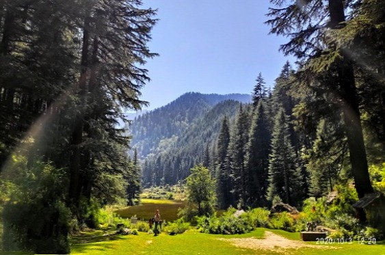
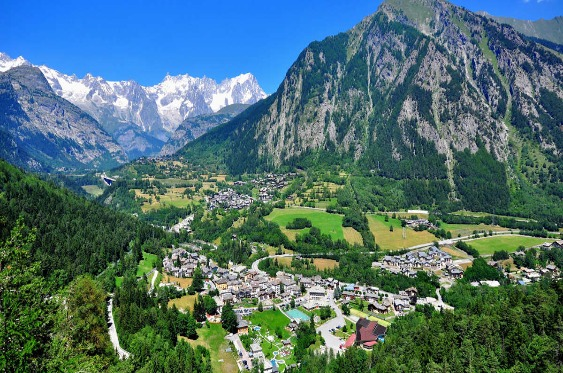
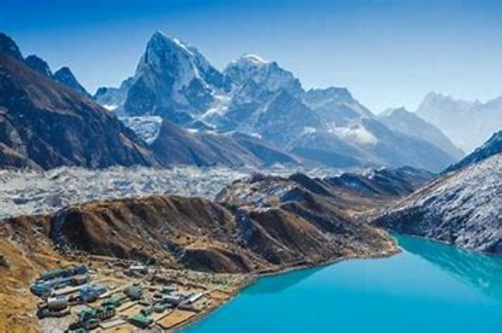

Karsog

Stash Of Stunning Apple Orchards : Karsog is a small town and nagar panchyat situated in the lap of Himalayas, near Shimla, at a height of 1,404 metres. It is in 7th Karsog subdivision of Mandi district in Himachal Pradesh in India. Karsog valley is a splendid gem. It is situated in the middle of orchards of apples and compact hilly woods of deodars and pines. You will have the time of your life here. Make sure to indulge in apple picking here with the locals.It is famous for its lush green mountains and massive fertile lands.
Prini

A Serene Mountain Village : Prini village is located in Manali Tehsil of Kullu district in Himachal Pradesh, India. The small village has a splendid waterfall in the Manali–Jagatsukh road. The village is covered with paddy fields and has well established transportation system. The moisture in the air smells like petrichor–as refreshing as the mud’s scent after first rain. This is among the best hill stations in Himachal Pradesh. It is famous for being home to people from various backgrounds and ethnicities.
.
Shoja

Spectacular Views Of The Himalayas : Close to Jalori Pass, mid-way between Kullu and Shimla, Shoja or Sojha is an absolutely splendid and striking hill station of Himachal. Famous for bird watching, overnight camping, nature trails, and trekking—Shoja offers the most spectacular views of the encircling Himalayan Ranges. This place is a tranquilizer for people searching for peace. The wooden houses and the slow moving passes take you to the stairway of heaven.